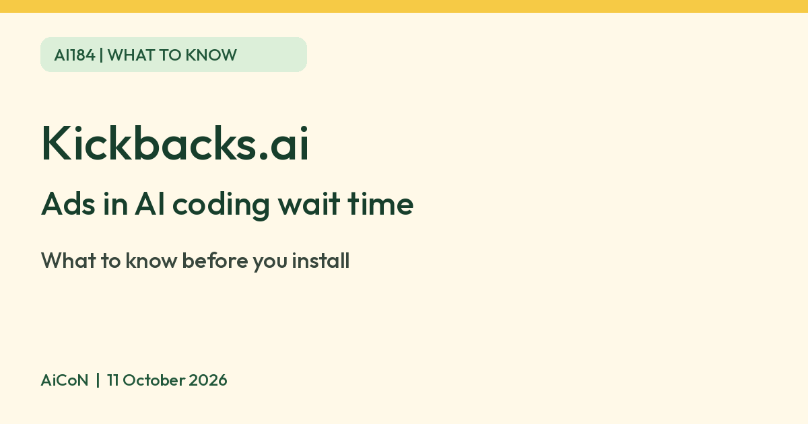

Kickbacks.ai: ads in your AI coding wait time, and what to know first
Kickbacks.ai shows ads in the thinking line of AI coding tools and shares an estimated 50 percent of ad revenue. The $20 an hour goes to one random developer, and payouts need Stripe.

What it is
Kickbacks.ai pays developers to show ads. Its home page says advertisers bid for the idle "thinking..." line that appears while an AI coding assistant is working, and the developer keeps coding. Its terms say it is run by Shiftkeys Inc. The home page lists support for Claude Code and Codex in the VS Code extension, and Claude Code in the terminal. Its FAQ says the Codex VS Code panel also earns, while Codex CLI does not; the install page describes Claude Code only. The FAQ says even terminal earning currently needs the VS Code extension running. These are company support claims, not our compatibility tests. Kickbacks.ai is independent and not endorsed by Anthropic, OpenAI or Microsoft.
How much you earn
Kickbacks.ai's terms say the current revenue split is "estimated" at 50% of net advertising revenue from your qualifying activity, and that earnings vary and the split can change. Its FAQ says balances are estimates until reconciled.
The "$20 every hour" line on the home page is not a normal wage. The page says "$20 every hour for 7 days. Credited to one random developer every hour." We did not verify the promotion’s start or end date, eligibility rules or an actual winner/payment. It is not reliable income. So $20 (about ₹1,940 using an illustrative ₹96.8/USD conversion, not a verified current exchange-rate or Indian payout quote) goes to one random developer each hour, not to every user.
Is it free
We found no fee for earning users on the pages we read. The advertiser side is priced per block of 1,000 impressions, from $0.50 for a bid. We did not find a page that says in so many words that the user side is free.
Is it available in India
Unclear, and payout is the weak link. Payouts run only through Stripe Connect, and the FAQ says it can pay you only in a country Stripe lets it send payouts to. If your country is not on the list, the FAQ says you still earn, your balance stays credited, but it cannot be paid until you can set up a Stripe Connect account in a supported country. The FAQ's country list is generated by the page and was not returned by our page read, so we could not confirm India. Do not build up a balance assuming an Indian payout will become available, and do not misstate your country or use someone else’s payout identity.
What to know before you install
- It patches your editor extension. Kickbacks.ai's FAQ says it works by patching the Claude Code VS Code extension. After a VS Code or Claude Code update, it says you may need to run "Kickbacks: Diagnose" so it can re-apply the patch. It says it never patches something it does not recognize. Treat the installer as software that changes your coding setup, not a harmless ad toggle. The terms require employer permission on an employer-controlled device. Check both editor-provider rules and workplace/client restrictions before installing; we did not audit the code or run the installer.
- Payouts are slow and small-print heavy. Batches go roughly every two weeks, after your balance passes the payment threshold (currently US $10, about ₹970, subject to change), you finish Stripe onboarding including tax forms, and fraud checks are complete. Unpaid earnings below the threshold are forfeited if your account is closed, to the extent allowed by law; a terms breach can forfeit all unpaid earnings. Eligible balances must be paid or explicitly forfeited before user-requested deletion. Tax forms, possible withholding, payout fees and home-country taxes can affect what you keep; this is not tax advice.
- Two privacy modes. In Private Mode, Kickbacks.ai says your work never leaves your machine and it shares ad shown, visible time, clicks, a pseudonymous ID, a hashed email and a truncated IP address. Boosted Mode is a separate opt-in the company says can earn more. It sends recent prompts, model replies and generated output, titles/recent prompts from other open sessions, file types and repo name to its servers. Ad partners receive a cleaned copy and derived interest profile, according to the FAQ. Its terms say its filters are best-effort and will not catch everything. Private Mode still shares ad telemetry, approximate location and device information; it is not zero tracking. Ad partners are independent controllers. Switching back to Private Mode stops future Boosted sharing but does not itself request deletion from partners. AiCoN advice: do not enable Boosted Mode on work/client code or third-party private content, and do not rely on filtering to protect secrets.
- 18+ only. The terms require users to be at least 18.
- No background-income shortcut. Only genuine human-initiated, visible, qualified activity counts, subject to duration rules and changing caps. Background agents and scripted requests do not earn under the FAQ; automating impressions risks account/payout penalties.
- Uninstall. The FAQ says removing the extension reverts editor patches; we did not test restoration. Account deletion is separate, through its privacy-choices form or support, and some financial/tax/fraud records can be retained. We did not inspect the separate privacy policy or verify retention periods.
- We did not test it ourselves.
Frequently asked questions
Is the $20 every hour for everyone?
No. Kickbacks.ai says it is credited to one random developer every hour for 7 days.
Can I get paid from India?
We could not confirm it. Payouts need Stripe Connect in a supported country, and balances in unsupported countries stay unpaid.
Sources: Kickbacks.ai, FAQ, Terms of Service, Install. Checked 11 October 2026.